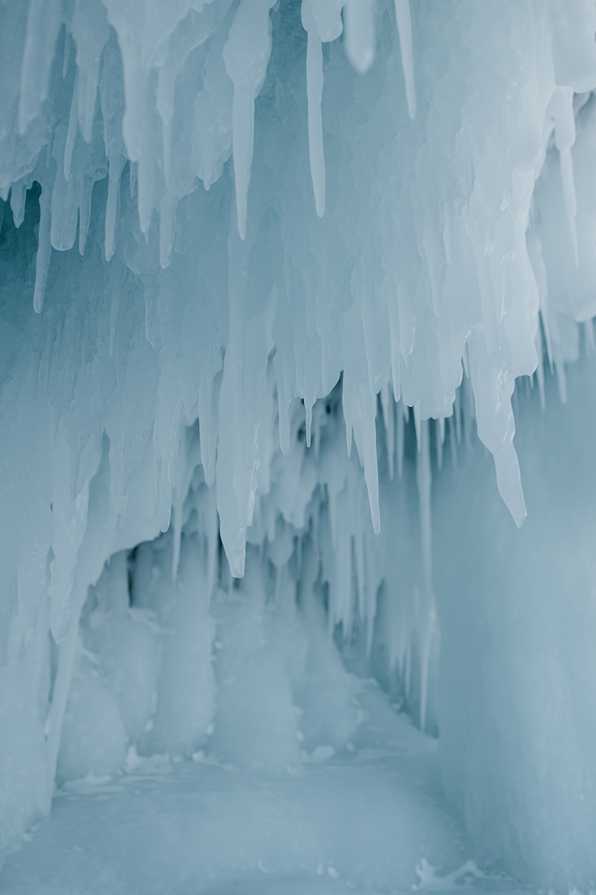

Venha visitar nossa sede no polo norte! O sol nunca se poe, nosso fuso horário tecnicamente não existe, e você pode encontrar ursos polares no caminho!
As imagens utilizadas nesse site foram retiradas de https://www.pexels.com/.
Informações e curiosidades sobre o gelo e polo norte foram retiradas de Infopedia.
A página está hospedada no serviço Azure Static Web Apps, e seu código fonte pode ser lido neste repositorio.